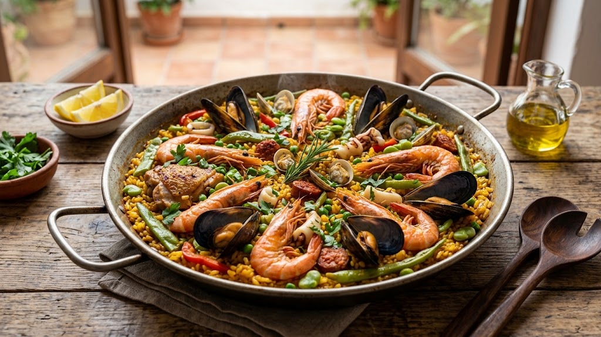
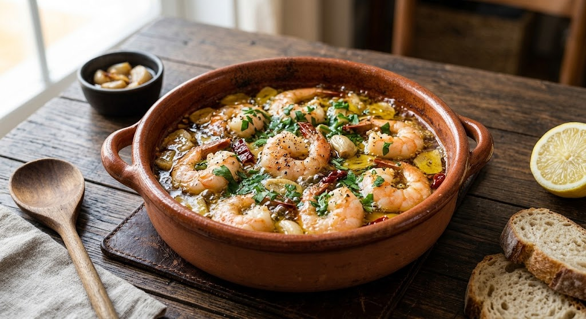

盛岡の風土とスペインの知恵が交差する場所。
震災を乗り越え、地域と共に歩んできた MITAD-Y-MITAD。
古材のカウンターで、最高の一杯と最高の一皿をお愉しみください。

パエリアパンの上でパチパチと音を立てるスープ、オープンキッチンから漂うガーリックと魚介の香り。私たちが提供するのは「料理」だけではありません。その場に流れる「活気」と「時間」そのものです。
お客様の「あったらいいな」をカタチに。
準備中の新メニュー＆サービスをご案内します。
「何を頼めばいいか分からない…」という方も安心！
スペイン料理が初めての方でも迷わず楽しめる特別スタータ―パック。看板メニューの「極上パエリア」「海老のアヒージョ」「自家製パン」「季節のタパス盛り合わせ」が一つになった、MITAD-Y-MITADの魅力を丸ごと堪能できる満足フルコースです。
お電話の前にサッと確認！ピン留め＆ハイライトで公開中
お電話予約の際に「お伝えいただくとスムーズな項目（希望日時・人数・パエリアの事前ご注文・アレルギーの有無など）」をInstagramのピン留め投稿およびハイライト「お電話予約ガイド」にてわかりやすくまとめております。ぜひチェックの上ご予約ください！
店名「MITAD-Y-MITAD」はスペイン語で「半分ずつ」。
拓郎の技術と貴子の感性、地域の食材とスペインの伝統、転居の想い、そして私たちとお客様。
すべてが半分ずつ補い合い、一つの幸せな空間を作ることを願って名付けました。